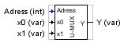

MULTIPLEXOR UNIVERSAL

Este bloque permite multiplexar cualquier tipo de datos.
A través de la entrada "Adress" de tipo INT seleccionamos el numero de canal y pasamos los datos de la entrada seleccionada (Xi) a la salida (Y).
El número de entradas se puede seleccionar mediante la propiedad "Input-Pins"